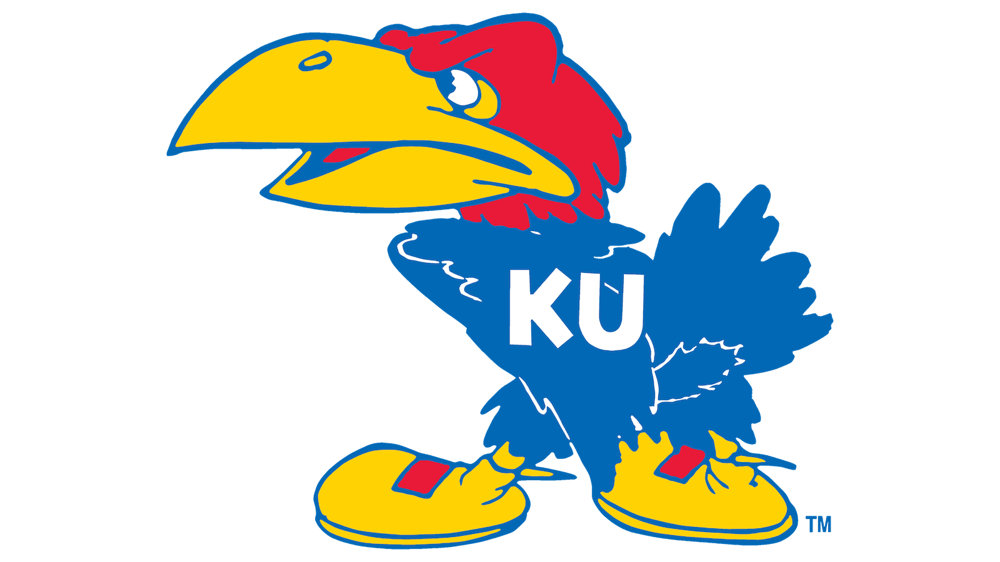
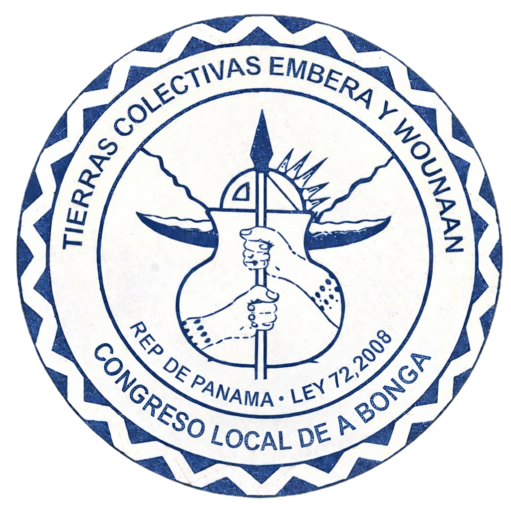
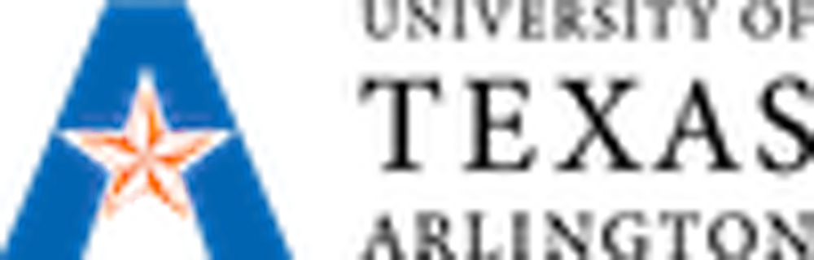
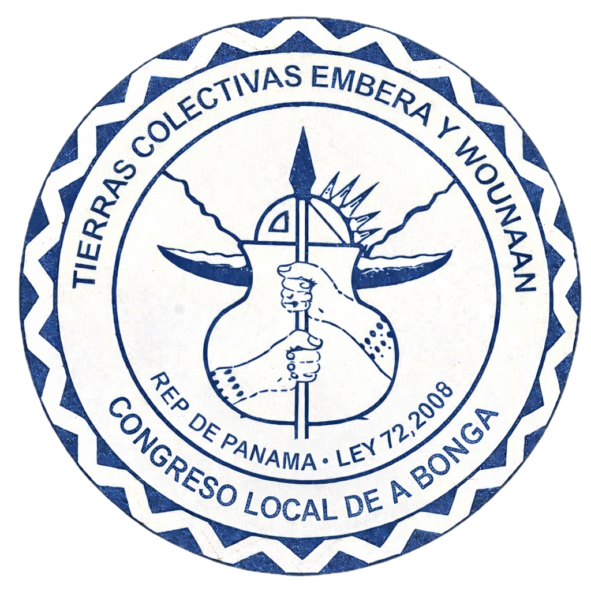
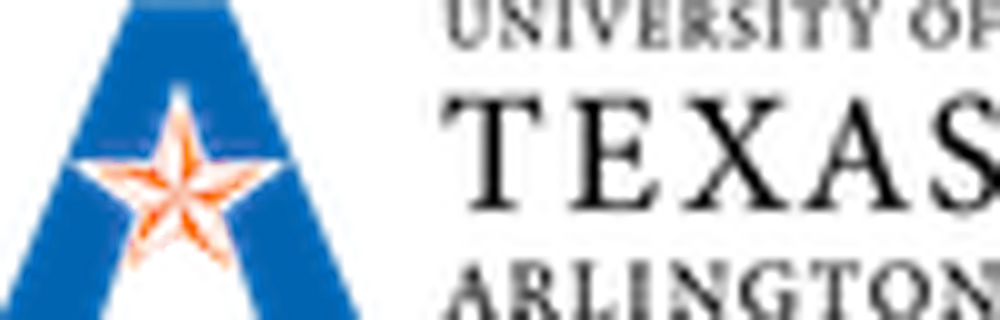

The Chagres Initiative
A KU and UT-Arlington Geographic, Participatory Research Mapping Project with the Indigenous Community of San Juan Pequení Indígena La Bonga, Panama
You can be part of our team by donating.
Your contribution directly supports paid Indigenous research collaborators, participatory mapping workshops, watershed monitoring equipment, and field support for KU and UT-Arlington student researchers working in the Chagres basin.
 



The Chagres Initiative is a community-based participatory zoning and monitoring effort in the Río Pequení sub-basin of Chagres National Park, the most strategically important watershed in the Panama Canal system. The park supplies an estimated 40 percent of the water used in Canal operations and about 80 percent of Panama City’s drinking water. Yet limited on-the-ground monitoring and enforcement in remote areas has enabled illegal settlement and deforestation, while the Emberá community of San Juan Pequení Indígena La Bonga remains in legal limbo as it seeks collective land recognition under Panama’s 2008 Law 72. Working with Indigenous leaders, neighboring campesino residents, and Canal institutions, the project combines participatory research mapping with GIS and remote sensing to co-produce consensus land-use zones and locally grounded monitoring tools that can strengthen watershed governance and Canal water security.


Peter Herlihy is Professor of Geography at the University of Kansas and a leading scholar in participatory research mapping (PRM). For more than two decades, his fieldwork in Latin America, particularly in Panama’s Darién region, has advanced collaborative mapping methods that integrate Indigenous geographic knowledge with formal GIS systems.
His work has informed land titling processes, territorial governance frameworks, and community-based conservation planning. At KU, he has trained generations of geographers in ethical, field-based research and continues to innovate participatory GIS methodologies that bridge academia and community governance.

Taylor Tappan is a geospatial researcher and lecturer at the University of Texas at Arlington specializing in remote sensing, land-use change analysis, and applied GIS. A “super Jayhawk,” he completed his undergraduate degree, M.A., and Ph.D. at the University of Kansas under the mentorship of Peter Herlihy.
His work uses satellite imagery and spatial modeling to analyze landscape transformation and environmental change across Latin America. Tappan’s expertise in high-resolution spatial data and watershed-scale analysis strengthens the technical foundation of the Chagres initiative, supporting rigorous mapping and long-term environmental monitoring.

Cap McLiney is a Ph.D. student in Geography at the University of Kansas. He wrote his M.A. at KU, where his thesis research examined Old Colony Mennonite settlement and land-use change in the Peruvian Amazon. His doctoral work now focuses on participatory research mapping and watershed governance in Panama’s Chagres National Park.
He received his undergraduate degree from Wake Forest University and is a lifelong Kansan and dedicated Jayhawk. His research integrates field-based geography, GIS analysis, and community collaboration to better understand how land, culture, and governance intersect across the Americas.

Specializing in Panama Canal watershed managment in the Río Indio basin for his master's thesis. Sam attended Rhodes College in Memphis and is an integral part of the field team as he brings GIS specialization which he applies to our project.

Chief, Indigenous Community of San Juan Pequení La Bonga
Marcelino Guatico serves as Chief of the Indigenous Community of San Juan Pequení La Bonga. He provides community leadership and guidance for participatory research mapping activities that support local governance, land-use planning, and long-term watershed stewardship.
As a central partner in the Chagres Initiative, he helps ensure the work remains community-driven, ethically grounded, and aligned with local priorities and decision-making processes.
Presidente, Indigenous Community of San Juan Pequení La Bonga
Elieser Adames is Presidente of the Indigenous Community of San Juan Pequení La Bonga. He supports community coordination and communication around research activities, including workshop planning, participatory zoning discussions, and collaboration with institutional partners.
His leadership strengthens shared decision-making and supports the project’s goals of building locally grounded mapping tools for long-term watershed monitoring and governance.
Ollie Berwanger is an undergraduate researcher supporting the Chagres Initiative. His work contributes to field preparation and documentation, assisting the research team with organizing materials, supporting data workflows, and helping translate field activities into clear public-facing updates.
As part of the student research team, Ollie strengthens the project’s educational mission and supports hands-on training in ethical field-based geography.
Oliver Zigmund is an undergraduate researcher supporting the Chagres Initiative. He assists with field-ready logistics and project organization, helping the team maintain clear documentation practices and supporting the careful handling of maps, notes, and collaborative research outputs.
His role connects the project’s participatory methods to practical research support, strengthening both student training and overall project execution.
This initiative is designed not simply to generate data, but to cultivate geographic knowledge that is ethical, transparent, institutionally grounded, and practically applied. In an era when research can become detached from the communities it studies, this project centers meaning in both method and outcome.
This project is built on a partnership with the Indigenous community of San Juan Pequeñí La Bonga, Panama. Community members are not research subjects; they are paid collaborators and co-producers of spatial knowledge.
Participatory workshops, field-based GPS mapping, and zoning discussions are conducted jointly, with local leadership guiding priorities. Data sovereignty, consent, and shared interpretation are foundational principles.
We believe meaning is created through shared authorship and trust.
Rather than confining findings to academic journals or static reports, this initiative maintains a transparent and evolving public platform available online through this platform and affiliated institutional or professional channels.
Field updates, methods, maps, and progress reports are shared openly so that geography is visible as it is being practiced. The research process itself becomes part of the public record.
We believe meaning is strengthened when knowledge is visible and accountable.
The project is endorsed by the University of Kansas Department of Geography and the KU Center for Latin American and Caribbean Studies which ensures academic rigor and ethical oversight.
At the same time, it invites civic engagement and public participation through grassroots fundraising support. This hybrid structure reflects a belief that serious scholarship and public engagement can reinforce one another.
We believe meaning is sustained when institutions and communities stand together.
The research is designed to produce tangible outcomes: participatory zoning frameworks, watershed monitoring strategies, and spatial tools that strengthen local governance within the Río Pequeñí sub-basin of Chagres National Park.
Success is measured not only in publication, but in practical benefit. The project is accountable to community partners, academic standards, and the public who supports it.
We believe meaning is realized when research leads to real-world impact.

During our team's visit to La Bonga during the summer of 2025, we visited the remote community twice in the village and with leadership many times in Panama City. During our second visit to the village of La Bonga, we presented openly the participatory research methodology to the group in Spanish. After understaind the potential of such a project, they unanimously voted in support of our project. Attached are the official, signed and sealed documents which legally authorize this work to be done under Law 72 of 2008.
Define mapping goals collaboratively with community leadership.
Equip local researchers with GPS, mapping, and documentation tools.
Collect ground-truth points through shared site visits.
Digitize and standardize outputs for planning and governance use.


This overview map situates the Río Pequení watershed within Chagres National Park - the geographic setting for our participatory research mapping work with the community of La Bonga.
Open La Bonga in Google MapsOngoing field reflections, research updates, and official project documentation from the Chagres Initiative.
Narrative updates from the field, participatory mapping workshops, and watershed engagement activities.
Field narratives and workshop documentation will be published on a rolling basis.
Formal reports, project summaries, grant documentation, and technical outputs.
Formal reports and technical documentation will be made publicly available upon completion and review.
Chagres National Park provides approximately 40 percent of the freshwater used in Panama Canal operations and roughly 80 percent of the drinking water for Panama City. The Canal remains one of the most strategically important global trade corridors, moving a significant portion of U.S.-bound maritime commerce.
Recent droughts have demonstrated that water scarcity is the Canal’s greatest operational vulnerability. Long-term watershed health directly affects trade reliability, regional diplomatic stability, and economic security. While locally grounded, the ecological importance of this watershed extends well beyond Panama.
This initiative proceeds only with community consent and institutional coordination. During a reconnaissance expedition in Summer 2025, the research team met with the Indigenous community of San Juan Pequeñí, participated in a formal Local Congress of Collective Lands, and received a written vote of approval and endorsement.
This authorization aligns with Panama’s 2008 Law 72 governing "Tierras Colectivas" or Collective Indigenous Lands. The project continues only through collaborative agreement with community leadership.
National park boundaries alone do not ensure protection. Effective stewardship requires understanding the ecological and social processes occurring within those boundaries.
Participatory research mapping translates Indigenous geographic knowledge into structured, transferable formats that can support zoning, monitoring, and long-term governance planning. At a fundamental level, it is difficult to protect what is not clearly understood.
Community members are trained as local geographers in GPS data collection and mapping techniques. Participants are compensated for their time and expertise.
The project is designed in three phases, depending on funding:
Year 1: Participatory mapping and geospatial database development.
Year 2: Consensus-driven zoning and development of community land-use guidelines.
Year 3: Final map production, synthesis, and integration into management planning frameworks.
This phased approach prioritizes thoroughness and long-term impact over speed.
Donated funds directly support field-based research and community collaboration. Primary expenditures include:
Administrative costs are minimized through institutional partnership with the University of Kansas. The project prioritizes directing resources toward community engagement and durable conservation outcomes.
The project is non-partisan and research-driven. Its focus is watershed stewardship, participatory governance, and environmental monitoring.
Final outputs will be shared publicly. Sensitive knowledge remains under community control in accordance with data sovereignty principles.
Yes. The framework combines participatory GIS, zoning, and institutional collaboration in a structured format designed to be adaptable to other protected areas.
The Chagres Geographic Fund directly supports equitable, community-based research partnerships in Panama.
Every dollar strengthens local capacity, watershed governance, and long-term Panama Canal water security.